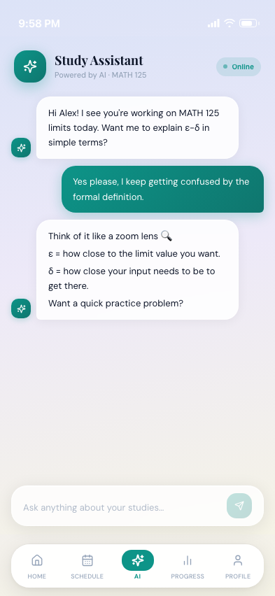

A research-driven mobile app that helps university students break overwhelming coursework into clear, structured steps — designed through user interviews, iterative prototyping, and usability testing.
Every design decision traces back to something a user said, felt, or struggled with. This case study follows a double-diamond process — diverging to understand the problem, converging to define it, then repeating through design and validation.
University students often struggle to manage multiple assignments, deadlines, and academic responsibilities across different courses. As coursework accumulates, students must keep track of tasks across several classes, each with its own schedule and expectations.
Research in goal-setting theory suggests that large or ambiguous goals can reduce motivation and make it harder for individuals to initiate tasks, while breaking goals into smaller and more specific steps can significantly improve motivation and task completion (Locke & Latham, 2002).
Although many productivity tools exist — Notion, Todoist, Google Calendar — these tools primarily focus on recording tasks and deadlines rather than helping students approach and progress through their work.
Learning management systems such as Canvas display assignments separately within each course, requiring students to manually combine information across platforms. Students are often left with long lists that feel overwhelming rather than helpful for guiding action.
"The core issue is not simply the number of assignments students face, but how those assignments are structured and presented."
To avoid designing for assumptions, I conducted desk research, literature review, and user empathy mapping before touching wireframes. The primary artifact was a deep empathy map for Marco Guo — a 20-year-old Informatics & CS junior at UW — built from qualitative interviews and behavioral observation.
Marco Guo
Age 20
Informatics & CS
UW Junior
"The centralized view made it easier to understand my whole workload."
"Visual progress indicators showed me how much work I'd already done."
"AI guidance helped when I wasn't sure how to begin an assignment."
Rather than listing features, each design decision below maps directly to a specific user pain point or behavioral insight uncovered in research. This traceability was central to my design process.
"The role of AI here is not to do the work for students — it's to lower the barrier to starting. Preserving student agency was a non-negotiable constraint throughout the design process."
Three core screens shaped directly by user research — from scattered task lists to not knowing where to start.
Category Filter
Filter by Science, Math, CS, or Engineering to surface the most relevant coursework instantly — no context-switching required.
Today's Focus
The most urgent task is always front and center, with a live progress bar and a one-tap Continue Session flow to reduce decision fatigue.
Active Courses
All assignments at a glance — real-time status badges (Up Next / Later / Done), due dates, and color-coded course icons across every class.

Context-Aware Greeting
The AI already knows your current subject, so you can dive straight into a question without re-explaining your situation every session.
Conversational Explanations
Responses use plain language, analogies, and structured breakdowns — designed to guide understanding, not just supply answers.
Always-Available Input
The input bar stays anchored at the bottom so quick questions are never more than a tap away, mid-study or mid-task.
Task Header
Course code, assignment name, professor, and due date — all the context you need without opening Canvas, email, or a syllabus.
Step-by-Step Breakdown
Large assignments broken into small, checkable steps. One tap marks a step done and automatically advances to the next — helping you stay on track.
Built-in Focus Timer
A Pomodoro-style timer suggests a duration based on the current step, keeping study sessions time-bounded and productive.
We conducted informal user testing with six UW undergraduate students who frequently manage multiple assignments. Participants completed realistic tasks and participated in short follow-up interviews.
Design is never finished, only shipped. Looking back at this project with fresh eyes, here's what I'd change, what surprised me, and where I'd take the next iteration.
"The most important design decision I made wasn't about the interface — it was choosing to treat academic overwhelm as an emotional and motivational problem, not just an organizational one. That reframing changed everything that followed."